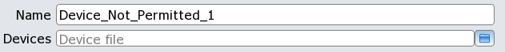

The rule generator Graphical User Interface fields appear as follows:

The device file has lines of this form, with one device per line. The asterisk (*) wildcard is supported for matching types and subtypes.
<device_type>['('<subtype>')']Angle brackets indicate user-specified arguments, and the argument names are self-explanatory. Additional details are given under “DEVICE_NOT_PERMITTED Netlist Setup Options”.
Results in the PERC Report appear like this:
1 Data
Devices not permitted in the design, Matched by: <type>[(<subtype>)]
<instance_path>(<x>,<y>) '[' <type>[(<subtype>)] ']'
<pin>: <net_instance_path>
... The number of reported instances is limited to 1000, after which reporting is truncated and a warning is written to the transcript. This check does not observe the PERC Report Maximum setting in the rule file.
The DFM database can be loaded into Calibre RVE for PERC to view results.
If your rules are configured to run against the source netlist, then you need not use the -ldl command line option for your Calibre PERC run. In this case, a DFB Database is not generated. When the ‑ldl option is not used in a source netlist check, the Mask SVDB Directory can be loaded into Calibre RVE instead.
The GUI pane supports the following option in the batch rule generator command perc_ldl::include_check ‑check_options list, which is derived from the perc_netlist::setup_options -check_params option. These options correspond to the GUI fields in the order they appear.
‘{’ -name check_name ‑device_type_file filename ‘}’
The filename contains a list of device types and (optional) subtypes, possibly using the asterisk wildcard (*) to match zero or more characters. Each device specification occurs on its own line in the file.
See “DEVICE_NOT_PERMITTED Netlist Setup Options” for details.